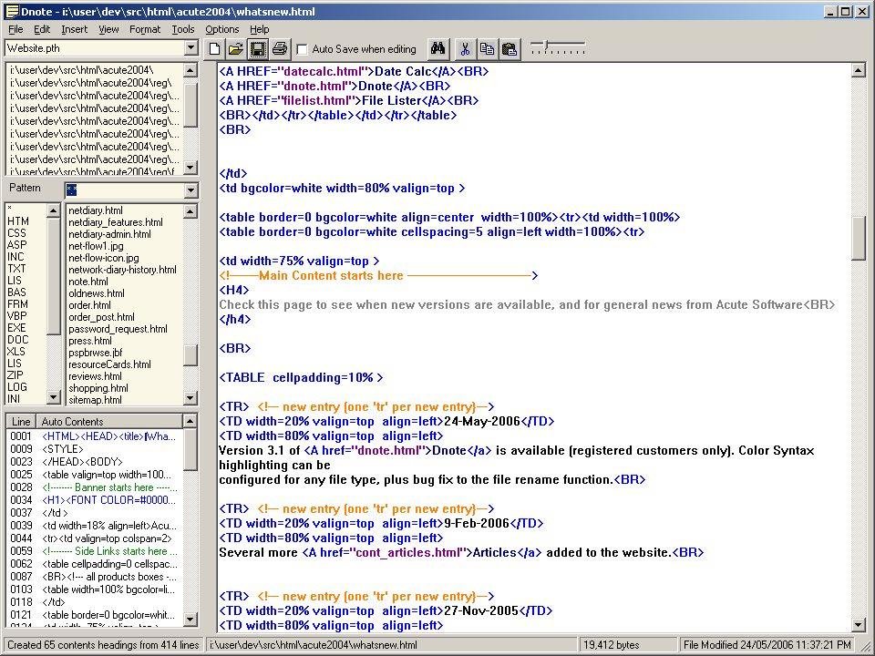

Features
Fast access to Files
Browse by file types
Multiple Clipboards
Autosave as you go
Text utilities
Customer Feedback
I use your program on a daily basis (to
store and retrieve text files) and it is extremely useful

$34.95 US
The editor designed for Programmers, Webpage designers, Network Administrators, Help desk
staff, power users and anyone who uses a lot of files at once, or who wants to quickly view the
contents of files.
NEW! version 3.1 has been released

Screen shot of Dnote
What makes it so fast
It keeps a list of your commonly used directories, so that you dont have to keep going backwards and forwards through explorer looking for files.
Also has 'power search' the fastest way to search a hard drive - with Windows 'find' it searches all files in all directories, however we all know that our documents are not going to be hidden in the windows/system directory, so why should you search it? Power Search only looks in the directories you tell it and combined with the Quick View facility and Autosave option, you will waste less time at your computer looking through explorer.
Whats New in version 3.1
Choose any file types for Color Syntax Highlighting
File Renaming Bugfix
Whats New in version 3.0
Color Syntax Highlighting
Whats New in version 2.0
extract list email addresses, Website addresses and source code headers from any file
save files in Unix, DOS or Mac format
remove whitespace, blank lines, HTML tags, special characters, Line feeds, carriage returns
convert text files to HTML
convert file to all uppercase or all lowercase
multiple path lists allowed
Replace function added, and improved searching
Scratch pad facility to hold notes while editing. You can hold up to 20 tabbed notes holding 1M of notes (if you really wanted to!). The scratch pad, by default is where the output from all formatting commands goes (turn on/off via the Tools menu). This is so you can review your changes to make sure its what you want - to keep changes, right click in the scratch pad and choose 'Send text back to Dnote'
Quicker copying and pasting between Dnote, the scratchpad and other applications. Extra menu options like 'Select all and Copy, Select all and Paste, Send to Scratchpad.
You can drag multiple files from Explorer into Dnote, or the scratchpad
Goto line number has been added
Undo feature added. this is limited to recent edits, But all files are saved to a backup directory when performing 'conversion' or formatting functions. Backup files are saved as filename.xtn.yyyy_mm_dd_hh_mm_ss
Insert menu added. you can insert the date and time, text from another file, and special ASCII characters
Download a trial version of Dnote
(2.3 MBytes) or
$34.95 US